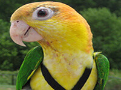

"No me importa saber si un animal puede razonar. Sólo sé que es capaz de sufrir y por ello lo considero mi prójimo."
BIENVENIDOS A NUESTRO CLUB
Si todos los animales se fuesen, el hombre moriría de una gran soledad espiritual, ya que cualquier cosa que le ocurra a los animales, también le ocurre al hombre. Todo está conectado.
-Jefe indio

Los animales necesitan cariño

Camina con tu mascota
Para muchos de nosotros las mascotas no son simples compañeros, son miembros de la familia.

Terry

Sam

Fato
